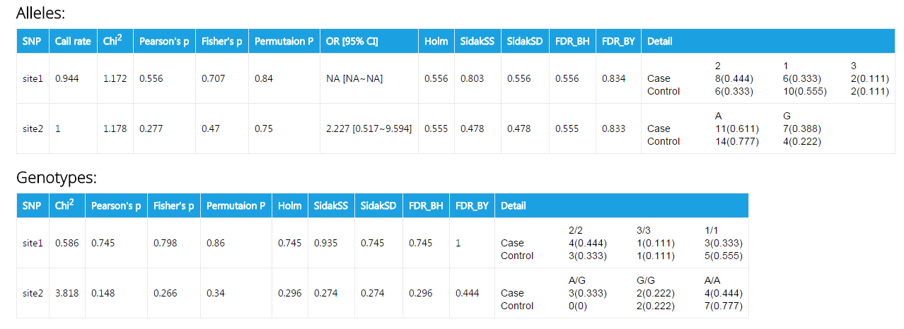
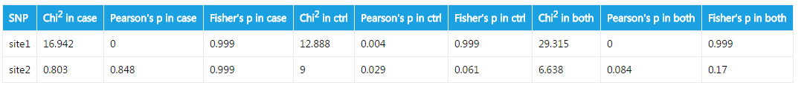
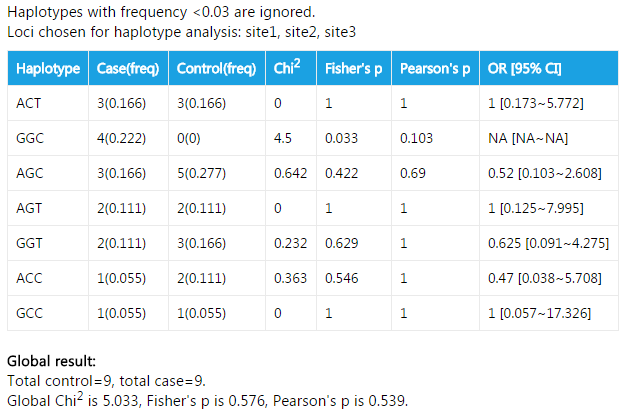
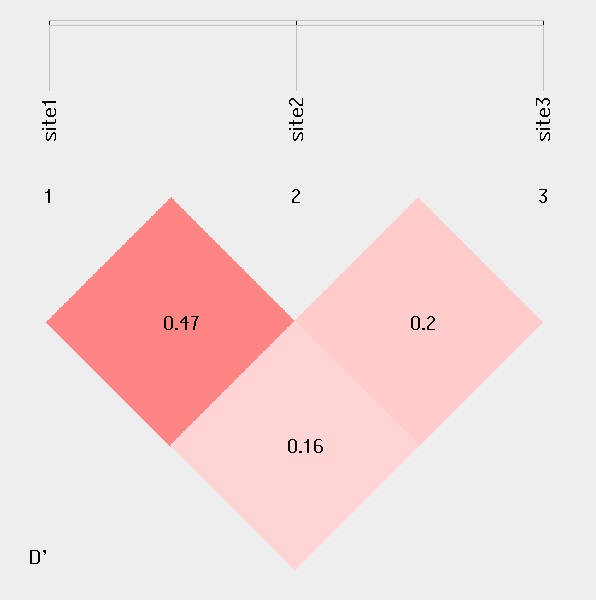
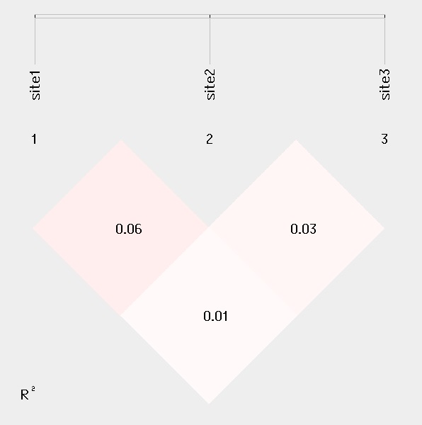
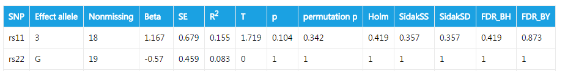
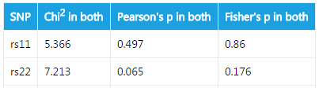
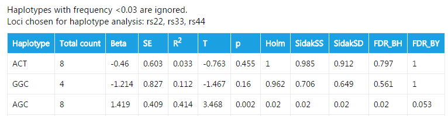

id1 G A C C 1 1 A1 A2
id2 A A T C 1 1 A2 A2
id3 A A T T 2 2 A3 A4
id4 0 0 T T 3 3 A5 A3
id5 G G A A 2 3 A1 A2
id6 A A C A 0 0 A6 A7
Help
- Introduction
- What's new
- Browser Support
- Input Format
- Arguments
- Choose Analysis
- Specify The Dataset
- Extra Options For Haplotype Analysis
- Extra Options For Linkage Disequilibrium
- Multiple Comparision
- Send A Mail When Completed
- Interpret Output
- References
Introduction
SHEsisPlus is a web-based platform for analysis of genetic association, Hardy-weinberg equilibrium, linkage disequilibrium and haplotype construction at multiallelic polymorphism loci, compatible for both diploid and polyploid species. The web-based version provides most of the functions. The stand-alone version is also available. You can download it from here.
What's new
Compared to previous version of SHEsis, SHEsisPlus is compatitable for haploid, diploid and polyploid species. It can not only analyze case/control data, but also quantitative trait data. It provides various ways of P value adjustments, including Holm step-down, Sidak single-step, Sidak step-down, FDR and permutation tests. All these can be can be performed via the webui.
Browser Support

|

|

|

|

|
| Supoorted | Supported | Supported | Supported | Required IE9 or higher |
SHEsisPlus supports all of the modern browers, including Chrome, Firefox, Safari, Opera and IE. If you are using IE, please use IE9 or higher.
Input format
1. Case/control data
sample data for diploidy species
sample data for triploidy species
id1 A G A T C C 1 1 1 AA T TT
id2 A A A C T C 2 1 1 A T AA
id3 G A A C T T 3 2 2 TT A T
id4 0 0 0 A T T 3 3 3 AA T AT
id5 G G G T A A 1 2 3 TA TT T
id6 G A A C C A 0 0 0 AA A A
The first column is sample id. The following columns are genotypes. They should be deliminated by space, comma or tab. Adjacent tokens will be compressed and will be treated as a single token. Genotypes can be any string (e.g. 1,2,3,4, or A,T,G,C , or A1,A2,A3,A4, or anything else) except 0, which is the coding for missing genotypes.
The above shown is sample data for diploid and tripolid species. For diploid species, the columns correspond to: sample id, site1-allele1, site1-allele2, site2-allele1, site2-allele2, .... For triploid species, the columns should be: sample id, site1-allele1, site1-allele2, site1-allele3, site2-allele1, site2-allele2, site2-allele3, ...
2. Quantitative trait data
sample data for diploid species
id1 20.6 G A C C 1 1 A1 A2
id2 25.4 A A T C 1 1 A2 A2
id3 23.1 A A T T 2 2 A3 A4
id4 42.4 0 0 T T 3 3 A5 A3
id5 11.0 G G A A 2 3 A1 A2
id6 5.5 A A C A 0 0 A6 A7
sample data for triploid species
id1 1.1 A G A T C C 1 1 1 AA T TT
id2 3.2 A A A C T C 2 1 1 A T AA
id3 14 G A A C T T 3 2 2 TT A T
id4 4.3 0 0 0 A T T 3 3 3 AA T AT
id5 24 G G G T A A 1 2 3 TA TT T
id6 4.49 G A A C C A 0 0 0 AA A A
The format for quantitative trait data is similar to that for case/control data except that the second column is the quantitative trait. The quantitative trait should be numeric.
Arguments
1. Choose analysis
There are 4 type of analysis available: association test, Hardy-Weinberg Equilibrum analysis, haplotype analysis and linkage disequilibrium analysis. You need to choose the kind of tests you'd like to perform by clicking the checkbox in front of the analysis name. You should choose at least one kind of analysis, and you can also choose all the four analysis at the same time.
2. Specify the dataset
SHEsisPlus supports analysis of polyploid species. You should specify ploidy of your dataset. Currently, web-based SHEsisPlus supports up to dodecaploid (12 sets). If the ploidy of your data is higher than 12, please download the stand-alone version.
Phenotype should also be specified. If the phenotype of your data is binary (case/control), please select "Case/Control" for phenotype. Then you should input data for both cases and controls in the below textarea. If your data is with quantitative trait, please select "Quantitative Trait" instead. Then in your data, every individual should have a quantitave trait and the quantitative trait should be numeric.
You could enter your maker names into the Marker name textfiled. Please use space, tab or comma to deliminate it. For example, "rs11,rs22,rs33,rs44" when there are 4 sites in all. This is opntional. If it is left blank, or invalid input is given, marker names will default to site1, site2, site3, ...
3. Extra options for Haplotype analysis
If Haplotype analysis is choosen, you could define the lowest frequency threshold (LFT) of analysis. The default value of LFT is 0.03. Every single haplotype with a frequency less than this value will be discarded in the association analysis. The range of LFT is [0,1). This step is optional. Invalid input will default the value to 0.03.
Moreover, you can also use a subset of the markers to perform haplotype. To do this, enter selected sites in Mask for hap-analysis textfiled. It should be deliminated by space, tab or comma. For example, "1,1,0,1" to choose 1st, 2nd and 4th sites for haplotype analysis when there are 4 site in all. If no mask is given, all the sites will be used.
4. Extra options for Linkage disequilibrium
For case/control data, linkage disequilibrium analysis can be carried out either in cases, in controls or in both cases and controls. You can select it after the label Calculate LD in. For quantitative trait data, linkage disequilibrium will be carried out in all samples.
5. Multiple comparision
We provided the methods to adjust for multiple testing. Two types of methods are available. One is p-value based methods including Holm's step down procedure, Sidal single-step procedure, Sidak step-down procedure, Benjamini & Hocheberg step-up FDR control and Benjamini & Yekutieli step-up FDR control. The other is permutation test, which is a data-level method and is much slower. If you want to perform p-value based adjustment, clicking the checkbox Sidak, FDR, Holm's correction after the label Multiple comparision. If you want to perform permutation test, enter the number of permutations in the textfiled Number of permutations. Currently, SHEsisPlus webserver accepts number of permutations <10000.
6. Send a mail when completed
Sometimes the analysis takes a long time, especially when your dataset is very large, or permutation test is selected. Under such circumstance, you can provide your e-mail address in the textfiled Your E-mail. When the analysis is done, the link to the results will be sent to your mailbox. Additionally, you can also specify the name of the dataset, which will be included in the mail subject.
Interpret output
1. Binary phenotype
a. Association test

This is an exmple of output for case/control association analysis. The fileds are:
| Header | Explanation |
|---|---|
| SNP | Names of SNPs. Your can specify the them in the textfiled Marker names. If you don't provide them, or your input is invalid, SNP names will default to site1, site2, site3 ... |
| Call rate | The percentage of individuals with nonmissing genotypes |
| Chi2 | χ2 in Pearson's Chi square test |
| Pearson's p | p value calculated from Pearson's Chi square test |
| Fisher's p | p value calculated from Fisher's exact test |
| Permutation p | p value acquired from permutation test |
| OR [95% CI] | Odds ratio [95% confident interval]. Please note that this value is only presented when a site has two allele types. |
| Holm | Holm (1979) step-down adjusted p-values for strong control of the family-wise Type I error rate (FWER) |
| SidakSS | Sidak single-step adjusted p-values for strong control of the family-wise Type I error rate (FWER) |
| SidakSD | Sidak step-down adjusted p-values for strong control of the family-wise Type I error rate (FWER) |
| FDR_BH | adjusted p-values for the Benjamini & Hochberg (1995) step-up FDR controlling procedure |
| FDR_BY | adjusted p-values for the Benjamini & Yekutieli (2001) step-up FDR controlling procedure |
| Detail | The counts and frequencies of a specific genotype or alleles |
b. Hardy-weinberg equilibrium test

The output is straightforward. Hardy-weinberg equilibrium is calculated in cases, in controls, and in both cases and controls. Both Pearson's chi square test and Fisher's exact test are performed.
c. Haplotype analysis
For web-based SHEsisPlus, the algorithm used for haplotype interfernce is expectation maximization (EM). Another algorithm based on SAT is available for stand-alone version. The SAT-based algorithm is much more slower than EM algorithm.The output for haplotype analysis looks like:

In this example, haplotypes with frequency <0.03 are discarded. 0.03 is the default value. You can change this value by modifying textfield Lowest frequency for hap-analysis. The fields in the table are also easy to understand. Apart from association test for every single haplotype, a global result is also given. This result shows if the haplotype distribution is different between cases and controls.
d. Linkage disequilibrium analysis
 
For linkage disequilibrium analysis, pair-wise D' and R2 are calculated. The higher two loci are in linkage disequilibrium, the darker the color will be.
1. Quntitative trait
a. Association test

This is an exmple of output for case/control association analysis. The fileds are:
| Header | Explanation |
|---|---|
| SNP | Names of SNPs. Your can specify the them in the textfiled Marker names. If you don't provide them, or your input is invalid, SNP names will default to site1, site2, site3 ... |
| Effect allele | Contributing allele. For biallelic species, the effect allele is the minor allele. For multiallelic species, the effect allele is the allele that gives the lowest p value. |
| Nonmissing | Number of non-missing individuals included in analysis |
| Beta | Regression coefficient |
| SE | Standard error |
| R2 | Regression r-squared |
| T | Wald test (based on t-distribtion) |
| p | Wald test asymptotic p-value |
| permutation p | p value acquired from permutation test |
The following fields have been described before.
b. Hardy-weinberg equilibrium test

For quantative trait, Hardy-weinberg equilibrium test in all samples are carried out.
c. Haplotype analysis

Total count is the count of this haplotype in the dataset. The other fileds have been described before
d. Linkage disequilibrium analysis
For quantitative trait, linkage disequilibirum is calculated in all samples. The results are similar to that of case/control data.
References:
[1] Neigenfind J1, Gyetvai G, Basekow R, Diehl S, Achenbach U, Gebhardt C, Selbig J, Kersten B.Haplotype inference from unphased SNP data in heterozygous polyploids based on SAT. BMC Genomics 2008 Jul 30;9:356. doi: 10.1186/1471-2164-9-356.
[2] Purcell S1, Neale B, Todd-Brown K, Thomas L, Ferreira MA, Bender D, Maller J, Sklar P, de Bakker PI, Daly MJ, Sham PC.PLINK: a tool set for whole-genome association and population-based linkage analyses. Am J Hum Genet 2007 Sep;81(3):559-75. Epub 2007 Jul 25.
[3] Hedrick PW. Gametic disequilibrium measures: proceed with caution. Genetics 1987 Oct;117(2):331-41.